![Fn+2 = Fn+1 + Fn,F1 = 1,F2 = 1
Fn+2 − Fn+1 − Fn = 0
Ecuat,ie caracteristic˘a: x2 − x − 1 = 0
√ --
Δ = 5 => x = 1-±---5
1,2 2
( √ --)n ( √ --)n
Fn = A 1 +--5- + B 1 −--5-
2 2
[ ( √--)n ( √ --)n ]
-1-- 1 +--5- 1-−---5
Fn = √5-- 2 − 2](document1x.png)


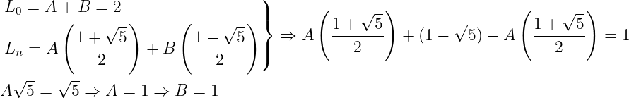


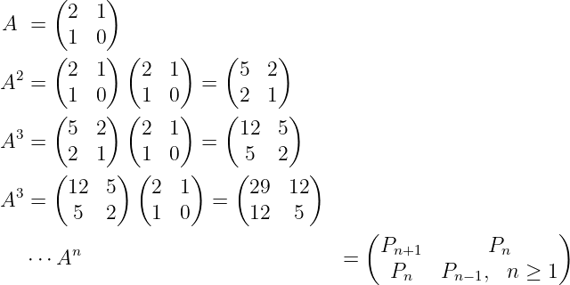


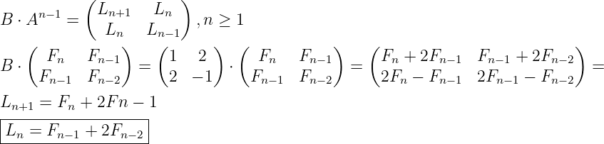

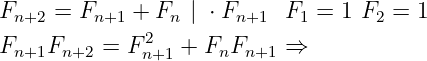


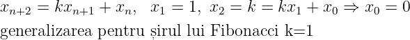


Dacă k = 2 ⇒ xn = Pn (șirul lui Pelle), și:
2(P12 + P
22 + P
32 +  + P
n2) = P
nPn+1
+ P
n2) = P
nPn+1
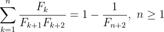
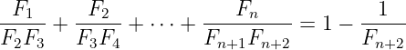
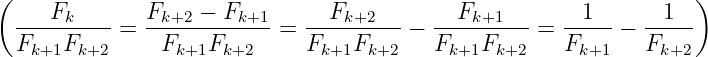

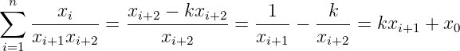

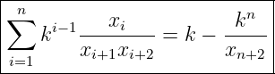
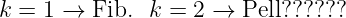
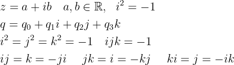
Horadam introduce al n-lea cuaternion Fibonacci:
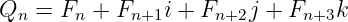
Observaţia 3. Dacă (a,b) = 1 i.e. a și b sunt prime între ele (coprime) atunci (∃)x,y ∈ ℤ astfel încât ax + by = 1
Descompuși în baze factori primi a și b:
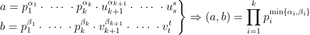
Exemplu:
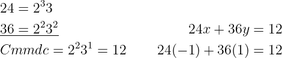
Se aduce matricea A formată dintr-o coloană cu numerele pentru care se caută CMMDC-ul, extinsă cu o matrice de forma In și se aduce prin transformări elementare la una dintre cele 2 forme de mai jos (ex. cu 2 numere, n = 2):
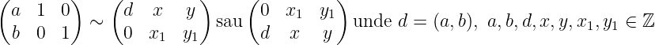
Analogie cu sisteme de ecuații:
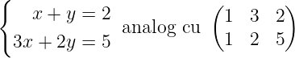
Reamintire transformări elementare asupra liniilor unei matrice:
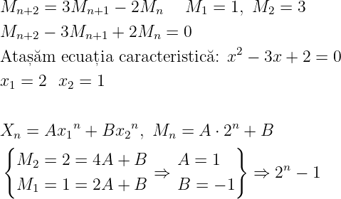

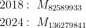
...